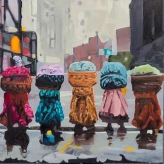
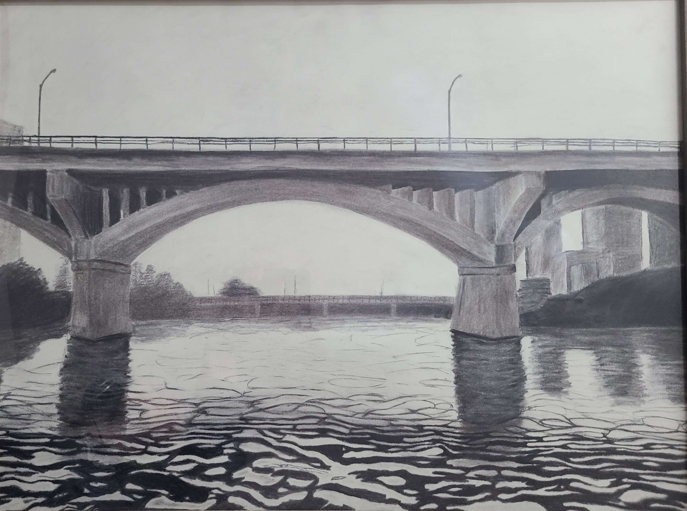

Hello, I'm Niamh
I'm a senior studying Multidisciplinary Engineering Technology (MXET) at Texas A&M University, graduating in spring 2027. My work is a combination of robotics, electronics, and mechanical design.
My technical interests center on dexterous robotic hands, manipulation, sensing, and mechatronics. I've built tendon-driven fingers with force control, designed custom rigid/flex PCBs for multimodal medical sensors, and co-founded a university-wide robotics competition that drew over 100 participants across 20 teams, with plans to expand to a national industry-focused competition through the NSF HAND Engineering Research Center.
I'm also the first author on a paper accepted to the 2026 IEEE ICELIE conference, and I serve as Vice President and Technical Lead of the nationally recognized ASME student section ASME-Tech at Texas A&M, where I plan and run build events, workshops, and study sessions for groups of 10–60 peers with my team of officers.
I was born and raised in Austin, Texas, and when I don't have an Onshape tab open, I enjoy hands-on hobbies (no pun intended). I love creating excessively large surreal oil paintings, doing realistic charcoal drawing, and crocheting stuffed animals for my family and friends. I'm also a longtime pianist and have recently picked up classical violin and electric guitar for a bit of variety. If I'm doing none of these things, chances are you can find me grabbing coffee with a friend and talking their ear off about my latest ideas for an underactuated finger.


Skills & disciplines
Core areas of expertise built through research, coursework, and hands-on project work.
Robotics & Controls
Tendon-driven actuation · PID & feedforward control · Kinematic modeling · MATLAB/Simulink · Robotic finger force control · Dexterous manipulation
Electronics & PCB Design
Altium Designer · Rigid & flex PCB design · Custom sensor design & evaluation · Soldering · Microcontrollers (Nordic nRF, Arduino) · Hardware debugging
CAD & Prototyping
SolidWorks · Fusion 360 · OnShape · 3D printing & design constraints · FEA (linear & non-linear static) · Rapid prototyping · Mechanical drawings
Software & Analysis
Python (data analysis & visualization) · C/C++ · Assembly · Git · LaTeX · Design of experiments (DOE) · Bland-Altman analysis · Quantitative sensor characterization
Lab & Instrumentation
Oscilloscopes · Multimeters · Bench power supplies · Sensor and actuator integration · Electromechanical hardware debugging · Experimental validation
Leadership & Communication
Competition organization (100+ participants) · Curriculum design & teaching · Technical presentations & documentation · Mentoring · Literature review · IEEE publication (first author)
Publications
N. Coles et al., "HAND ERC Dexterous Design Challenge," 2026 IEEE International Conference on Engineering, Technology, and Education (ICELIE), October 18–21, 2026.
AcceptedN. Coles et al., "Design and Proof-of-Concept Evaluation of a Multimodal Diabetic Foot Ulcer Insole with Single-Axis Shear Warning," IEEE Sensors.
In preparation